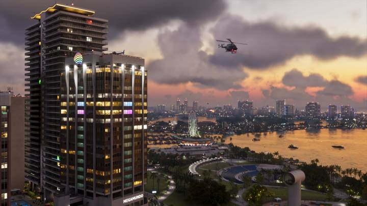
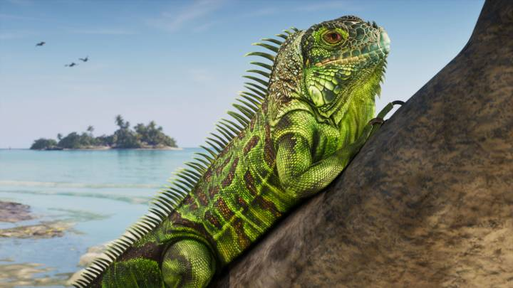
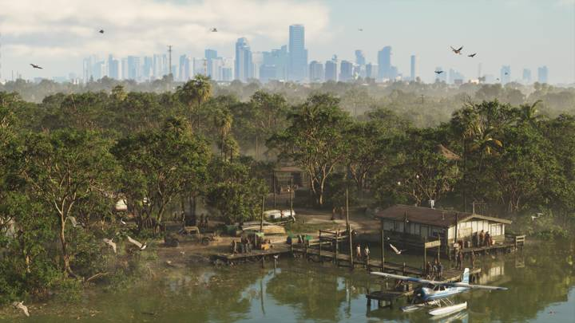
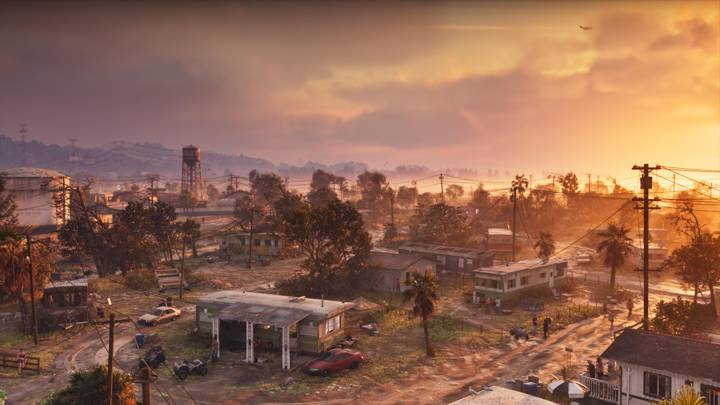
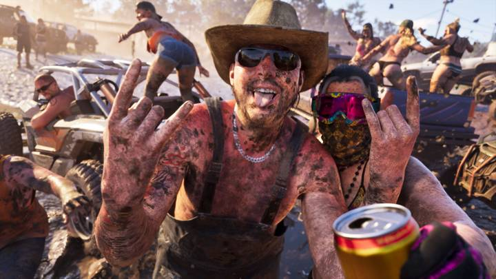

Карта GTA 6: штат Леонида и регионы
Обновлено: 24.09.2026

- Действие игры происходит в вымышленном штате Леонида — это аналог Флориды.
- Главный город — Вайс-Сити (аналог Майами).
- Rockstar официально показала 6 регионов.
Штат Леонида
GTA 6 переносит серию в вымышленный штат Леонида, прототип которого — Флорида. Сердце карты — город Вайс-Сити, который Rockstar описывает как «тёмную сторону самого солнечного места Америки».
Все регионы

Вайс-Сити (Vice City)
Крупнейший город штата: пляжи, ночная жизнь, яхты, небоскрёбы и портовые районы. По словам Rockstar, со времён 80-х многое изменилось, но Вайс-Сити по-прежнему столица солнца и развлечений.

Leonida Keys
Тропический архипелаг — цепочка островов с неспешной жизнью у воды.

Grassrivers
Дикие болота и заросли — первозданная природа, где никогда не знаешь, что скрывается под водой.

Port Gellhorn
Портовый городок на побережье, курорт, переживший свои лучшие времена.

Ambrosia
Сельский регион в центре штата с промышленными окраинами.
Национальный парк Mount Kalaga
Просторы на севере штата: охота, рыбалка и бездорожье.
Регионы и прототипы
| Регион GTA 6 | Реальный прототип |
|---|---|
| Вайс-Сити | Майами |
| Leonida Keys | Флорида-Кис |
| Grassrivers | Эверглейдс |
| Port Gellhorn | Побережье Мексиканского залива (Флорида) |
| Ambrosia | Центральная Флорида |
| Mount Kalaga | Север Флориды |
Прототипы — по сходству с официальными кадрами; сама Rockstar реальные места не называет.
Источники: Rockstar Games — официальный сайт игры (rockstargames.com/VI) и Rockstar Newswire.